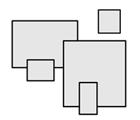

Prev - #26 Handshakes | Table of Contents | Next - #28 Border Drawing
drawRectangle(16, 4) → ################
################
################
################

In this exercise, you’ll create some ASCII art, primitive graphics created from text characters. There will be a few such exercises in this book. In this first one, your code draws a solid rectangle out of # hashtag characters.
Exercise Description
Write a drawRectangle() function with
two integer parameters: width and height. The function doesn’t return any values but rather
prints a rectangle with the given number of hashtags in the horizontal and
vertical directions.
There are no Python assert statements to
check the correctness of your program. Instead, you can visually inspect the
output yourself. For example, calling drawRectangle(10, 4)
should produce the following output:
##########
##########
##########
##########
If either the width or height parameter is 0 or a
negative number, the function should print nothing.
Try to write a solution based on the information in this description. If you still have trouble solving this exercise, read the Solution Design and Special Cases and Gotchas sections for additional hints.
Prerequisite concepts: for loops, range(), print(), end keyword argument for print()
Solution Design
The solution requires a pair of nested for
loops. The inner for loop prints a row of hashtag
characters the width of the width parameter, while
the outer for loop prints a number of rows the same
as the height parameter. Inside the inner loop, prevent
print() from automatically printing a newline by
passing the end='' keyword argument, like print('#', end='').
Alternatively, you can use string replication to create a row of hashtag
characters. In Python, you can use the * operator
with a string and an integer to evaluate to a longer string. For example, enter
the following into the interactive shell:
>>> 'Hello' * 3
'HelloHelloHello'
>>> '#' * 16
'################'
>>> width = 10
>>> width * '#'
'##########'
Using string replication, you can avoid needing a second for loop in your solution.
Special Cases and Gotchas
The solution to this exercise is fairly straightforward. But you
should note that in terminal windows, the text characters are twice as tall as
they are wide. If you want to display a square shape, the width you pass to the
drawRectangle() function should be twice the height.
Now try to write a solution based on the information in the previous sections. If you still have trouble solving this exercise, read the Solution Template section for additional hints.
Solution Template
Try to first write a solution from scratch. But if you have difficulty, you can use the following partial program as a starting place. Copy the following code from https://invpy.com/rectangledrawing-template.py and paste it into your code editor. Replace the underscores with code to make a working program:
def drawRectangle(width, height):
# Special case: If width or height is less than 1, draw nothing:
if width ____ 1 or height ____ 1:
return
# Loop over each row:
for row in range(____):
# Loop over each column in this row:
for column in range(width):
# Print a hashtag:
print('#', ____='')
# At the end of the row, print a newline:
print()
The complete solution for this exercise is given in Appendix A and https://invpy.com/rectangledrawing.py. You can view each step of this program as it runs under a debugger at https://invpy.com/rectangledrawing-debug/.
Further Reading
For examples of ASCII art, check out https://en.wikipedia.org/wiki/ASCII_art and https://www.asciiart.eu/. I’ve also compiled a large number of ASCII art examples in the .txt text files in this Git repo: https://github.com/asweigart/asciiartjsondb
Prev - #26 Handshakes | Table of Contents | Next - #28 Border Drawing